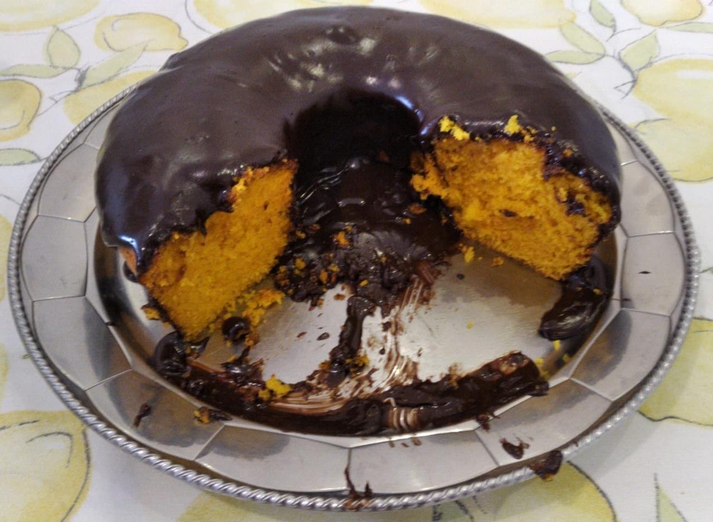
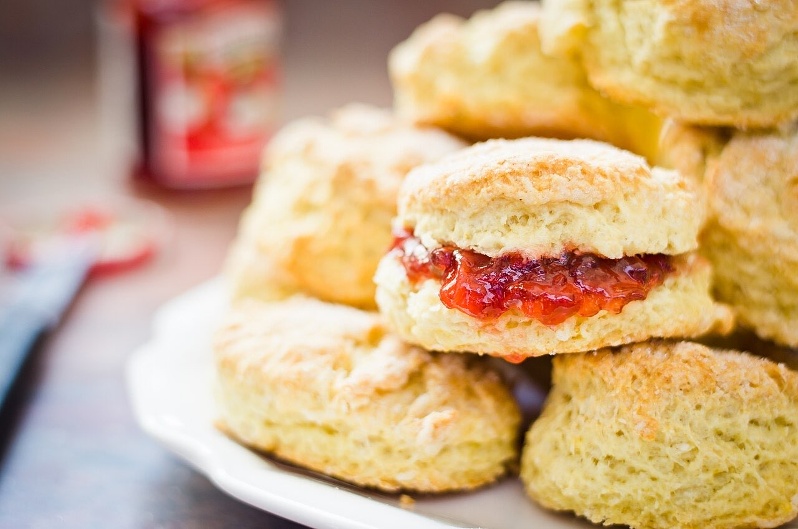

Fotografias ilustrativas — no site final usamos as vossas.
Salão de chá · Centro histórico
Chá e lanche calmo no Largo
Uma pausa tranquila para chá e lanche.
4,6★ em 560 avaliações no Google.
Por QR code, sem esperar pela equipa.
O Chá Mate é um salão de chá no Largo Bernardo Valentim Moreira de Sá, no centro histórico de Guimarães. Sente-se com calma para um chá, um bolo e uma conversa sem pressa.


Fotografias ilustrativas — no site final usamos as vossas.
Novo · Pedidos por QR code
Menos espera nas horas de ponta, menos enganos nos pedidos e a equipa livre para servir.
Encomenda
Diga o que precisa e quando quer levantar (ou receber). Respondemos por WhatsApp.
↑ Assim chegaria a mensagem ao vosso WhatsApp. (Nesta demonstração nada é enviado.)
Onde estamos
Proposta para Chá Mate - Salão de Chá
Esta página foi feita de propósito para Chá Mate - Salão de Chá por João Machado, programador web aqui de Guimarães. Inclui:
Eu trato do alojamento e da manutenção. Sem compromisso.